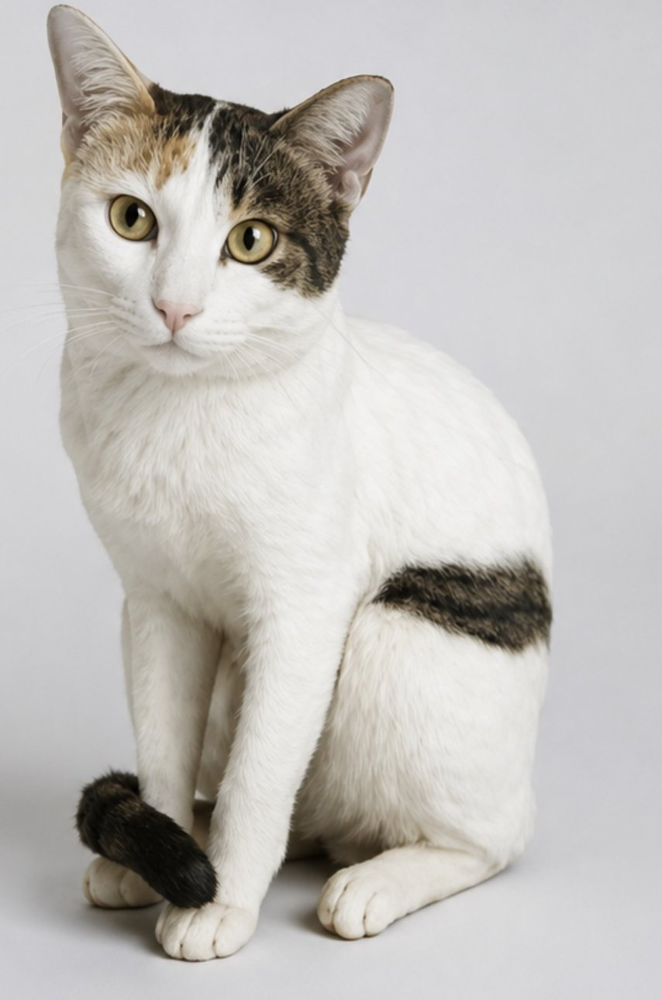

01 — the source
It starts with one ordinary photo.
No scanner, no turntable, no modelling software. A single picture of a cat, sitting still enough for one frame. That is the entire input.
The point of the exercise is that the barrier is gone. A student who has never opened a 3D program can hold a physical object that started as something they photographed.